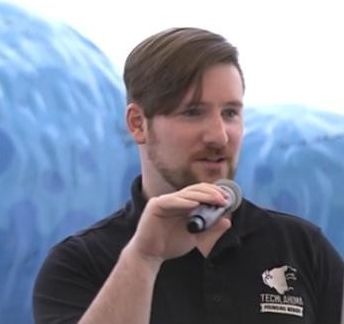
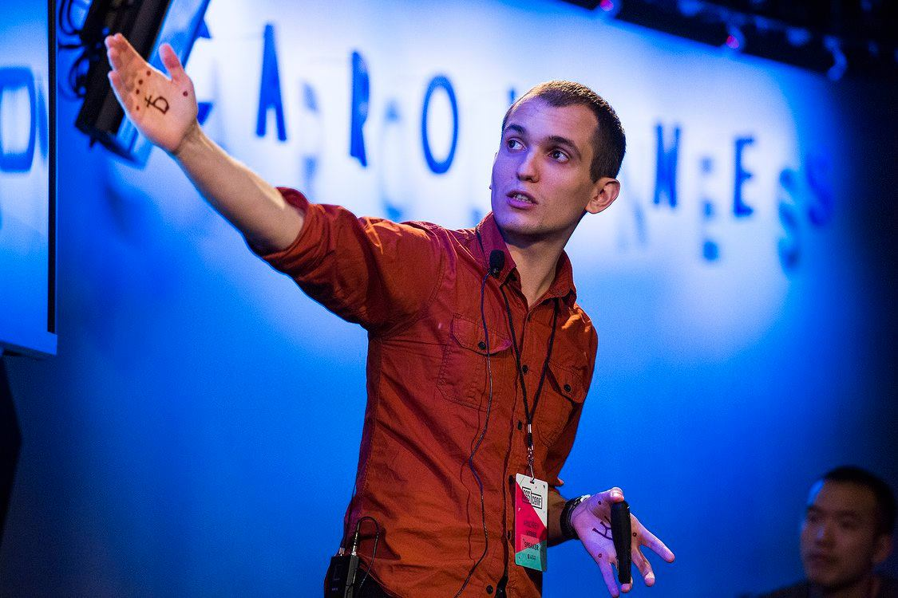
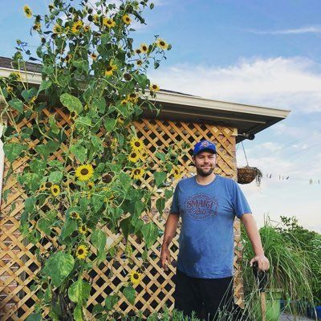

ThunderPlains is a web and mobile developer conference that focuses on
Community, JavaScript and related tech that make the web interesting.
ThunderPlains is organized and backed by Techlahoma – a volunteer-run
501(c)3 non-profit. Techlahoma is dedicated to advancing Oklahomans
through accessible tech training and community building.
Code of Conduct
Before attending the conference, please review the Thunder Plains Code of Conduct. The CoC applies to everyone (all attendees, speakers, volunteers, and vendors) at official and unofficial events by Techlahoma, including any location where attendees may be congregating.
Have questions? Please email us or alert us on Twitter. We're here to help!
Why'd you have to go and make things so complicated?
Learning web development from scratch can be a daunting task. In addition to programming languages, there are all kinds of tools it seems you need to master just to get started: bundlers, taskrunners, package managers, transpilers… when and how did web development get to be so complicated? In this talk, we'll follow the evolution of a web page through time, introducing it to technical obstacles and innovations until we arrive at present day. We'll come away with a better appreciation for the problems our modern tools solve, and historical context for how the field has evolved.
Jory Burson
Jory is a consultant and educator working to improve collaboration in open source and open standards communities as a member of several industry boards and standards setting organizations. She is sponsored by Bocoup to advocate for web developers on Ecma International's Executive Committee, the JS Foundation Technical Architecture Committee, the W3C Advisory Council, the MDN Product Advisory Board, and works on projects with Ecma TC39, Ecma TC53, and Web Platform Tests.
The Developer Trail: Adventures Shipping Secure Software
As a developer a certain set of skills, habits, and tools are needed to ship "secure" software. Set to the theme of the Oregon trail, this talk takes you down the developer trail, equipping you with new tools, making sure your team has built the right skills, and overcoming unknown challenges. Will you catch a virus from a 3rd party dependency, narrowly escape peer review, or make it to production unscathed? Find yourself on the developer trail.
Adam Baldwin
Adam Baldwin is the Head of Security at npm inc. He is the Founder of the Node Security Project & talks about JavaScript security non-stop. In his free time Adam enjoys doing basically the exact same stuff he does for work, also raising chickens, and spending as much time as possible with his wife and 2 children.
Jewelbots: How to Get More Girls Coding!
Girls just wanna have fun … coding their own programmable jewelry! Jewelbots are the latest in wearable tech with a great feature - they allow you to write your own code. This live demo of programming with Jewelbots will introduce you to the Jewelbots API, showcase the latest awesome firmware updates(and how to get them), highlight fun projects, and talk through tips on running workshops, mentoring, teaching, & encouraging young women in tech. Loops are easy to understand when accompanied by color coordinated led lights!
Jennifer Wadella
Jennifer Wadella has been writing code since before she realized it was a credible career path. She currently works as a lead front-end developer at legal tech startup and loves building javascript applications and speaking at technical conferences. Jennifer is an active member of the KC tech community and the founder of Kansas City Women in Technology(KCWiT), an organization aimed at growing the number of women in technology careers in Kansas City.
At your service with Service Workers
Intermittent internet connection is something many people in the United States face, and it’s a huge hurdle to complete simple tasks like finding a bank balance – or even more important tasks like searching for employment.
Service workers can help by caching assets like HTML pages, images and even JavaScript files within the user’s browser. Once the assets are cached, the browser will load directly from the cache making the entire loading process faster. Even better, because the assets are already in the browser, the page will load without an Internet connection!
This talk will introduce service workers, explore use cases, and teach the audience how to implement service workers in their apps. We’ll also learn about other great features of service workers like background sync and push notifications.
Carmen Bourlon
Carmen is a software developer living and working in Oklahoma City. She is a frequent speaker at local usergroups and organizes SheCodesOKC, a group dedicating to teaching women about tech.
In her spare time, Carmen boxes, blogs, and tweets.
Pew Pew!! Set Phasers to Javascript!
This talk is about three things that interrelate. Firstly, its about some fundamental concepts for making a video game, such as how to manage animations, maps, basic AI and more. Secondly it is about Phaser 3, the latest-and-greatest framework for achieving your videogame goals in Javascript. Thirdly it is about my experience working on a boilerplate and scaffold to bring all these ideas into an Open Source project so anyone can make their own game in Javascript!
That just the groundwork! The last part of the talk is the best part! With these three things we're then going to mix it up and explore some of the more interesting techniques for game creation such as procedural level generation, AI randomness, Behavior Trees, rules engines for Tilemaps and more!
Jesse Harlin

Jesse Harlin is a fullstack developer and business owner living and working in the Oklahoma City metro area. Most of what he learned in software he learned while studying music. Hard work, daily practice, reading the works of others and a willingness to enthusiastically collaborate have fashioned Jesse into a successful engineer who now operates and programs for his development company, Simiancraft.
Jesse also loves his family, the local dev community, synthesizers and javascript game dev.
Setting up a proper centralized store for your application
Every application, no matter what framework that you use needs a really solid centralized store. This helps to maintain state and persist data back into your systems. We will cover a check list to help determine what the best centralized store is for you. It may be using a library that is already out there or rolling your own solution. This talk will give you the knowledge needed to make those decisions!
Joshua Godi
Joshua is obsessed with cats… like real obsessed. Here are a few examples: All of his talks and presentations while running the St. Louis Angular Meetup have some sort of cat theme, while working at Bullhorn as the Principal UI Engineer and Developer Advocate he is using the phrases “you cat to be kitten me” and “kitty please” and while traveling as an Instructor with Angular Bootcamp he consistently tells stories of the “cute” things his cat does while teaching AngularJS and Angular classes.
So MANY databases, which one do I pick?
Ten to fifteen years ago, we picked between a few major SQL databases. Now our apps have a variety of needs, and an overwhelming selection of database platforms. There are 5 main database families. In this talk we’ll survey all 5: Relational (SQL), Key/Value (NoSQL), Columnar (NoSQL), Document (NoSQL), and Graph (NoSQL). We’ll cover what scenarios each family handles well. In addition, we’ll discuss the most popular members of each family. So, the next time you need to pick a database, you’ll know which one - or ones - are the best fit.
Kristin Ferrier
Kristin is a freelance full stack developer with a specialty and passion for data. Her 18 years of experience includes working with every size of company, drawing on professional experience ranging from small startups to corporations with over 37,000 employees. She loves speaking at user groups and conferences, especially on the topic of data. In her free time she can often be found attending various comic cons or watching her favorite science fiction shows.
CRDT and other new ideas for client-server communication
What technologies could replace GraphQL in the future? How can we mix ideas from Redux and long-standing ideas from the 80s to make the better user experience for our web applications?
Andrey Sitnik from New York will explain why he switched from making improvements to CSS tooling (PostCSS) to pursuing CRDT ideas.
Andrey Sitnik

The creator of PostCSS, Autoprefixer, and Logux. Lead front-end developers at Evil Martians.
Better Layouts with Flexbox + CSS Grids
Advances in CSS layout systems have made it easier than ever to create robust, browser-compatible, responsive layouts with Flexbox and CSS Grid. I’ll take you through the basics of both of these layout types, distill common misconceptions and demo some practical use cases so you can start using them today to create stronger layouts for the web.
Samantha Provenza
Sam Provenza is a Product Designer at Tailwind and a self-proclaimed CSS enthusiast based in Brooklyn, NY. When she's not glued to her computer, Sam enjoys running the NYC chapter of Girl Develop It, exploring new cities and being a cat mom.
Embracing the Future of the Web Platform with Web Components
The modern web is built on a foundation of components. All of our frameworks have their own idea of what a component is supposed to be. But as our tooling continues to evolve, we find ourselves unable to share code between applications even if they might use the same framework. Enter web components. This talk will explore the web components specifications and give you the tools and knowledge to begin creating the future of the web today.
Caleb Williams
Caleb Williams is a lead front-end developer at Capital One's ONE Design organization in Plano, TX where he is responsible for the creation and implementation of the Financial Services design system and it's web component library. Caleb attended the University of Oklahoma where he graduated with a degree in journalism and mass communication which has led him to explore many career paths including copy writing, editing, visual and experience design and eventually landing on web development. When he's not working, Caleb will be spending time with his wife and two young daughters or involved with his local church.
Using WebAssembly in *all* the web
This is a quick overview of what the WebAssembly is and where technology is present nowadays. The talk will demonstrate how to create and run a simple WebAssembly application and which tools can be used along the way.
Yury Delendik
Yury Delendik is a software engineer at Mozilla. He is a big believer in open source and a contributor to open source projects. The Web platform is a valuable destination for more and more complex applications, and the WebAssembly technology can help with that. Currently, he works on providing debugging capabilities in web browsers for the WebAssembly.
Code the Change You Want to See In the World
My wife and I wanted to build a mobile app to make growing food easier, so we started learning how to code last year. We released our app at the end of the year and are now the #1 search result for "growing food" in the App Store with over 50,000 downloads and 10,000 monthly active users. This talk explains how we learned to code, built the app, and share the marketing strategies we used to climb to the top of the app store!
Dale Spoonemore

Dale Spoonemore is the creator of From Seed to Spoon, an iOS & Android mobile app that helps people grow food and manage pests in their garden. He's a member of the Surgical Care Affiliates software development team and lives in Oklahoma City with his wife and 4 children.
Need an invoice/email for your billing department? Have a different question? Send us an email.
Volunteers needed! Let us know how you want to volunteer for ThunderPlains. Social media posters, photographers, early-morning greeters and others all welcome to apply.